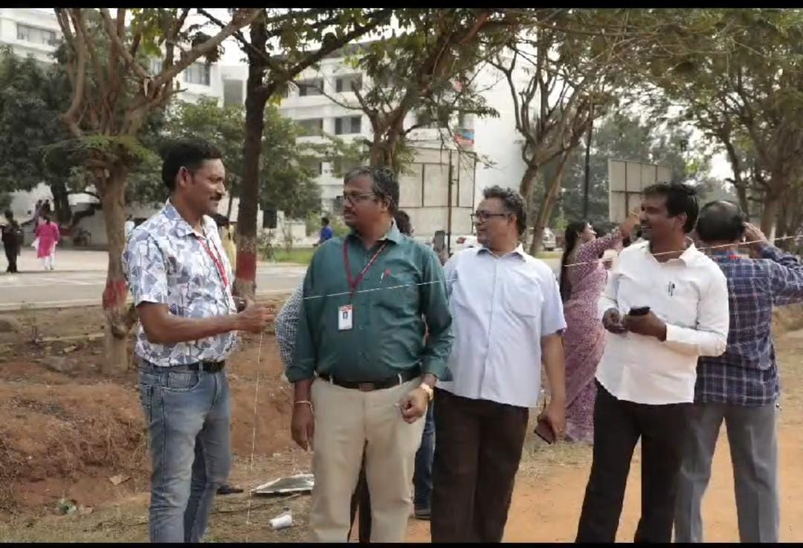
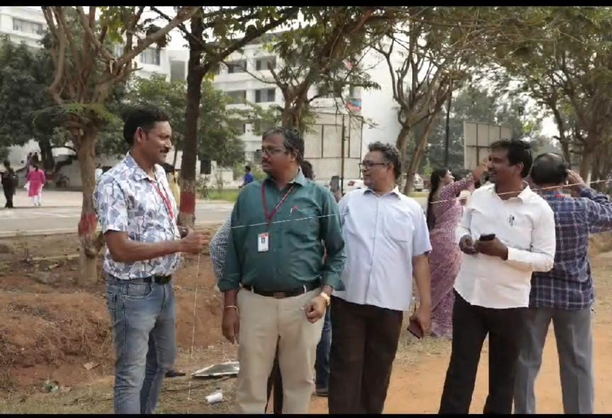

Vignan’s Lara Institute of Technology & Science was filled with festive cheer during Sankranthi Sambaralu, uniting students, staff, and faculty in celebration. The campus buzzed with energy, cultural pride, and joy as various traditional events brought everyone together.
📠Where: Vignan’s Lara Institute of Technology & Science
📅 When: 6th October, 2024


 
